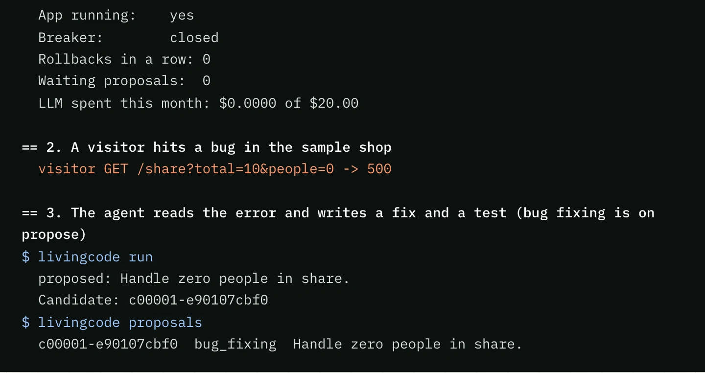
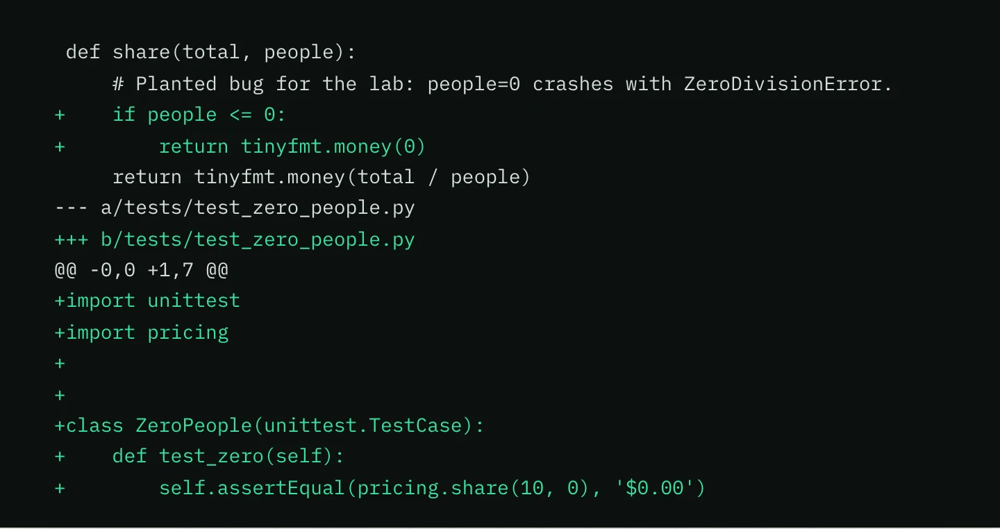
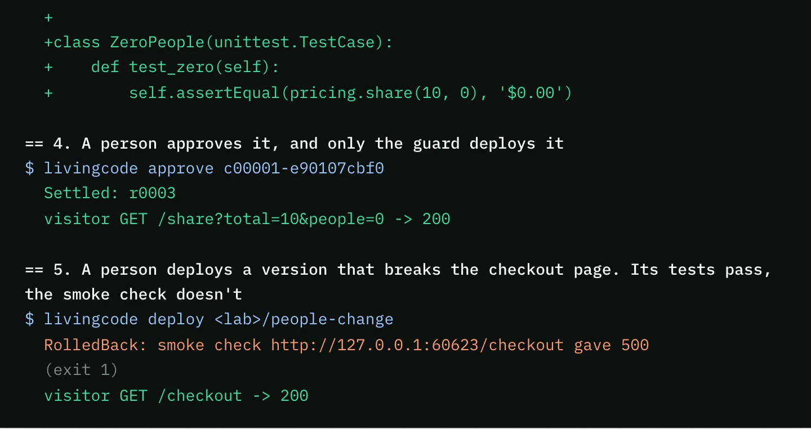

LivingCode reads the errors in your logs and writes a fix with your own LLM key. A guard with no AI in it deploys the fix, watches it, and puts the last good version back if anything breaks.
A replay of a real run, slowed down to read. The agent here runs on a scripted fake LLM.
r0003 is live. Health checks pass.
Press the button to break the release. This bit is a toy. The replay above is the real thing.
25kinds of broken release, all rolled back with no AI involved
0outside calls needed for a rollback. A test runs it with the network blocked.
1,459lines in the guard, all standard library and no LLM client
141tests, from killing the guard mid deploy to prompt injection
How it works
An agent writes the fix. A guard decides if it lives.
They run as separate processes. The agent can only hand over a change, and only the guard can deploy it.
01
It catches the error
A visitor hits a bug and the app logs it. The agent reads that log, with secrets and personal details taken out first, then works on a copy of your code until it has a fix and a test that proves it.
Triggers: a new error, a daily round, or livingcode run
the bug, then the agent's proposal

02
You read the fix
On propose mode nothing ships until you say so. You see the diff, the reason and the new test. Your approval is tied to that exact change, so an edited change needs a new yes.
Approve with livingcode approve <id>
livingcode show

03
The guard ships it, or takes it back
Backup, build, an atomic switch, then health and smoke checks through probation. If a check fails, the guard puts the last good release back by itself. It doesn't need the AI or the network to do that.
Roll back by hand any time with livingcode rollback
a good release, then a broken one

The thing that makes the changes isn't the thing that protects you from them.
From the original idea
Features
Built around the moment a deploy goes wrong.
A rollback with nothing to lean on
The rollback is plain fixed code. It needs no network, no LLM, no key and no working app, and a test runs it with the network blocked by the operating system.
Your key, your limits
Bring a Claude or ChatGPT key. Hard caps per round and per month stop the spending, and every call is written down after redaction.
Propose first, auto later
Each capability is off, propose or auto. Bug fixing starts on propose. Behaviour changes always wait for a person, even on auto.
A backup before every deploy
Code and config get backed up first, and the last five releases are kept. Data restore always stays in your hands.
Tests in a sealed box
A change's tests run in a sandbox with no network, no home folder and no secrets. New tests can be added, but existing ones can't be edited or deleted.
Hostile logs, handled
Log text is treated as data, not orders. Emails, keys, cards and tokens are removed before anything leaves the machine, and the agent has no shell.
Install
Try it on your Mac.
You need macOS and Python 3.11 or newer. There's nothing else to install.
The setup installs a throwaway sample shop, starts it and runs a practice rollback.
The lab uses a scripted fake LLM, so nothing is paid for and no key is needed.
Run the setup again any time to update and restart everything.
Get it and set up the lab
$ git clone https://github.com/abozaralizadeh/LivingCode.git
$ cd LivingCode
$ ./setup_service.sh
Play the whole story on a fresh lab
$ python3 scripts/demo.py
Run the tests (a few minutes, they start real processes)
$ python3 -m unittest discover -s tests -t .
FAQ and limits
What it can't do yet.
Can I point it at my own project?
Not yet. A lab lock in the code refuses anything except the sample app on macOS. The guard and the agent still have to run as separate users on Linux, and that split, the main protection in the design, hasn't been tested.
Does the AI ever deploy anything?
No. The agent can only hand over a candidate change. Only the guard deploys, and the guard has no LLM client, no key and no code that waits on the agent.
What if a bad change passes every check?
It can happen. That's why there's a probation window, one agent deploy a day by default, a circuit breaker after three rollbacks in a row, and a manual rollback to any of the last five releases.
Which LLMs does it work with?
Adapters for Claude and ChatGPT are written, but so far they've only been tested against a local fake server. Nobody knows yet how a real model does with the agent's prompt. The lab runs on a scripted fake.
Is it open source?
It's source available. You can use it, study it and change it for anything non-commercial, under PolyForm Noncommercial 1.0.0. For commercial use, open an issue and ask.
Watch a broken release come back on its own.
Clone it, run the demo, and read the guard. It's short enough to read in an afternoon.